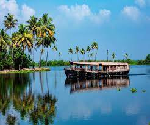

| Destination | Details |
|---|
Statue of Unity | The statue of unity The Statue of Unity is a statue of Indian statesman and independence activist Vallabhbhai Patel (1875–1950), who was the first deputy prime minister and home minister of independent India and an adherent of Mahatma Gandhi. Patel was highly respected for his leadership in uniting 562 princely states of India with a major part of the former British Raj to form the single Union of India. The Statue of Unity is the world's tallest statue, with a height of 182 metres (597 feet).[3] It is located in the state of Gujarat, India, on the Narmada River in the Kevadiya colony, facing the Sardar Sarovar Dam 100 kilometres (62 mi) southeast of the city of Vadodara.[4] |
Taj mahal | The taj mahalThe Taj Mahal was commissioned by Shah Jahan in 1631, to be built in the memory of his wife Mumtaz Mahal, who died on 17 June that year, while giving birth to their 14th child, Gauhara Begum.[10][11] Construction started in 1632,[12] and the mausoleum was completed in 1648, while the surrounding buildings and garden were finished five years later.[13] The imperial court documenting Shah Jahan's grief after the death of Mumtaz Mahal illustrates the love story held as the inspiration for the Taj Mahal |
Ladhak | ladhak The largest town in Ladakh is Leh, followed by Kargil, each of which headquarters a district.[15] The Leh district contains the Indus, Shyok and Nubra river valleys. The Kargil district contains the Suru, Dras and Zanskar river valleys. The main populated regions are the river valleys, but the mountain slopes also support the pastoral Changpa nomads. The main religious groups in the region are Muslims (mainly Shia) (46%), Buddhists (mainly Tibetan Buddhists) (40%), Hindus (12%) and others (2%).[16][17] Ladakh is one of the most sparsely populated regions in India. Its culture and history are closely related to that of Tibet |
Jaislmer | The Golden city, is a city in the Indian state of Rajasthan, located 575 kilometres (357 mi) west of the state capital Jaipur. The town stands on a ridge of yellowish sandstone and is crowned by the ancient Jaisalmer Fort. This fort contains a royal palace and several ornate Jain temples. Many of the houses and temples of both the fort and of the town below are built of finely sculptured sandstone. The town lies in the heart of the Thar Desert (the Great Indian Desert) and has a population, including the residents of the fort, of about 78,000. It is the administrative headquarters of Jaisalmer District. Jaisalmer was once the capital of Jaisalmer State |
| Kerala | The Chera Dynasty was the first prominent kingdom based in Kerala. The Ay kingdom in the deep south and the Ezhimala kingdom in the north formed the other kingdoms in the early years of the Common Era (CE). The region had been a prominent spice exporter since 3000 BCE. The region's prominence in trade was noted in the works of Pliny as well as the Periplus around 100 CE. In the 15th century, the spice trade attracted Portuguese traders to Kerala, and paved the way for European colonisation of India. At the time of Indian independence movement in the early 20th century, there were two major princely states in Kerala: Travancore and Cochin. They united to form the state of Thiru-Kochi in 1949. The Malabar region, in the northern part of Kerala, had been a part of the Madras province of British India, which later became a part of the Madras State post-independence |
Jaipur  | Jaipur is a popular tourist destination in India and forms a part of the west Golden Triangle tourist circuit along with Delhi and Agra (240 km, 149 mi).[13] It also serves as a gateway to other tourist destinations in Rajasthan such as Jodhpur (348 km, 216 mi), Jaisalmer (571 km, 355 mi), Udaipur (421 km, 262 mi), Kota (252 km, 156 mi) and Mount Abu (520 km, 323 mi). Jaipur is located 616 km from Shimla.
On 6 July 2019, UNESCO World Heritage Committee inscribed Jaipur the "Pink City of India" among its World Heritage Sites.[14] The city is also home to the UNESCO World Heritage Sites Amer Fort and Jantar Mantar. |